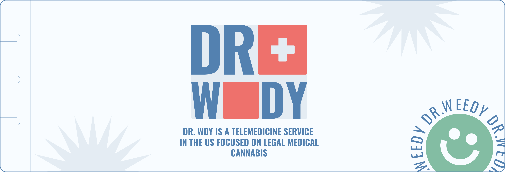
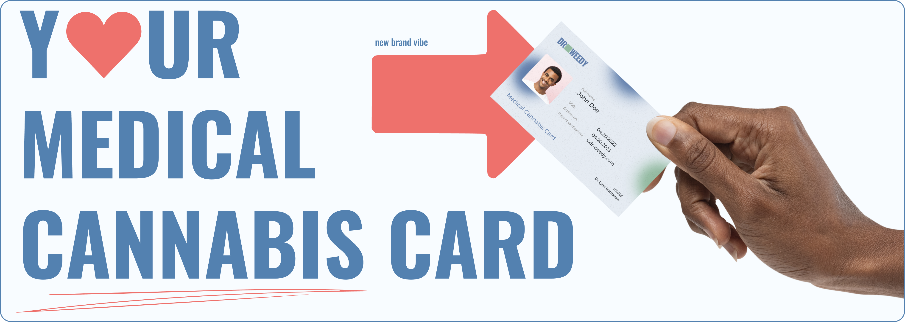
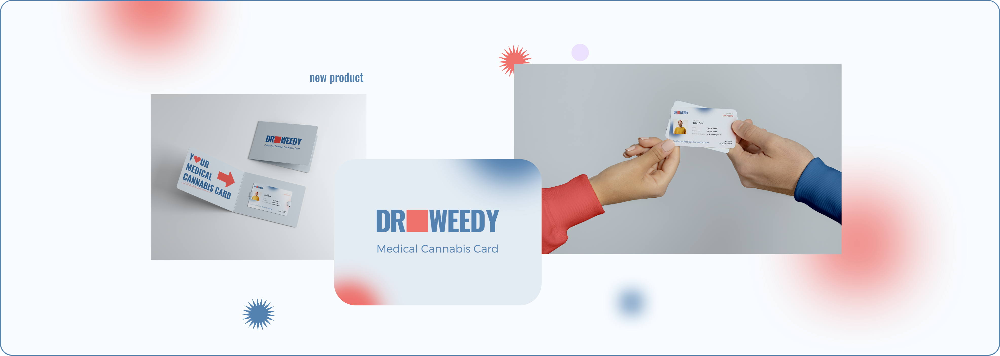
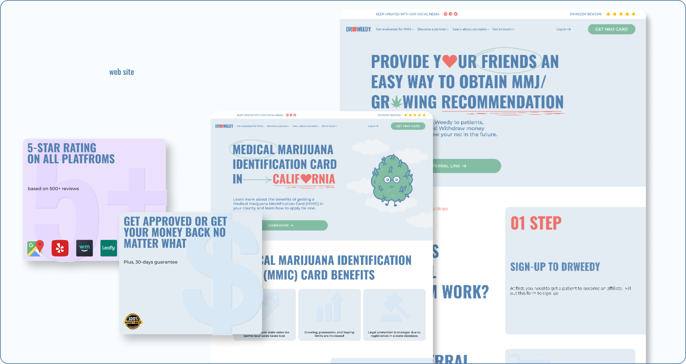
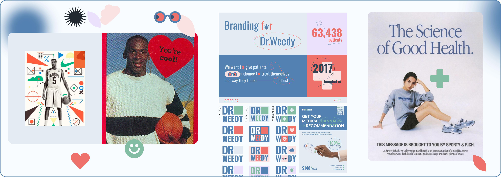
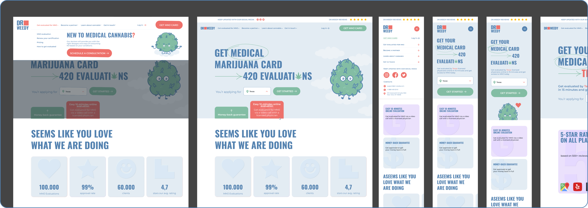
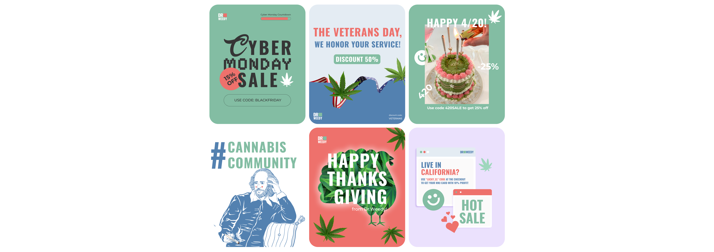

USA\DOCTOR WDY
BRAND IDENTITY&SITE


Brandbook parts:




PROJECT CONTEXT
Dr WDY is a U.S.-based telemedicine service working in a sensitive and legally complex category: medical cannabis. The product is built as a subscription that gives people access to licensed doctors.
When I stepped in in Spring 2022, the brand was basically in its early, unfinished stage. The product existed, but the brand did not.
This project was initiated by me with a clear decision to build the brand from scratch and turn it into a system that could actually live across channels.
VISUAL CONCEPT

We consciously avoided traditional clinical aesthetics. In this category, "medical" visuals can easily feel cold, scary, and distancing.
Instead, we chose a direction that references a 90s vibe and a sporty, "healthy" aesthetic: something relaxed, friendly, and grounded in real life rather than institutional design.
That choice helped to:- lower anxiety
- normalize the topic of medical cannabis
- avoid subcultural and marginal cliches
- create a sense of physicality, life, and calm
The visuals were designed to carry the same emotional message:
"we're here to help you."

A SYSTEM, NOT ISOLATED ASSETS
One of the key priorities of the project was system building. The identity, website, social media, and marketing materials were designed as a single ecosystem rather than a collection of disconnected elements.
Within the project, we:- developed visual and communication principles
- defined and documented the tone of voice
- fully reworked the website structure and visual design
- styled Instagram as part of the brand system
- prepared post templates
- created email and advertising materials
The goal was also to give the team tools for independent, consistent use of the system.
PROCESS
- an audit of the brand’s current state
- competitive landscape review
- concept development
- exploration and testing of visual directions
- iterative system building across multiple touchpoints
The process was non-linear and required constant alignment with the sensitivity of the category and the constraints of the market.


TAKEAWAYS
This project became an important experience in working:
- under high uncertainty
- without access to data
- in a sensitive medical category
- with a focus on trust-building and anxiety reduction
It reinforced a key principle: design and identity create real value only when they are embedded into communication and processes, not when they exist as a standalone visual layer.
This case study is published with the client’s consent and reflects the brand state and decisions at the time the project was completed.